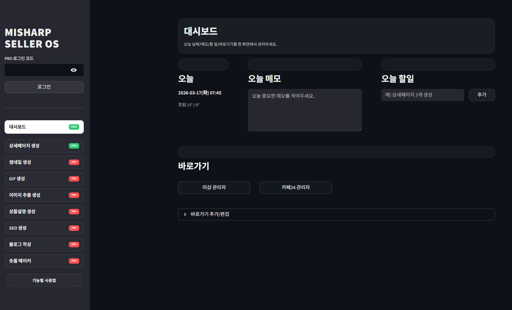

셀러OS는 단순히 문장을 생성하는 도구가 아닙니다. 실제 쇼핑몰 운영자가 가장 자주 부딪히는 문제, 즉 제작 시간 과다, 외주 비용 부담, 콘텐츠 품질 편차, 반복 작업 피로, 구매전환을 고려하지 않은 결과물의 한계를 줄이기 위해 만들어졌습니다. 입력은 줄이고 결과는 넓히는 흐름, 바로 그 운영 방식 자체를 서비스로 옮겨놓았습니다.

상품 하나 등록하려고 이미지 정리, 설명 문구 작성, SEO 키워드 고민, 블로그 글 초안, 숏폼 문구까지 각각 따로 만들다 보면 실제 판매보다 제작 업무가 더 무거워집니다.
담당자나 날마다 컨디션에 따라 카피 톤이 달라지고, 썸네일과 상세페이지 메시지가 어긋나고, 브랜드 인상이 들쭉날쭉해지는 순간 전환 효율도 함께 흔들릴 수 있습니다.
상품 이미지와 기본 정보만으로 더 빠르게 전환형 상세페이지 초안을 구성합니다. 반복 작업은 줄이고, 일관된 구조를 유지하는 데 집중합니다.
판매 문구와 검색 노출용 문구를 분리하지 않고 한 흐름으로 연결합니다. 판매 포인트를 놓치지 않으면서도 검색 유입 관점의 문장 설계까지 고려합니다.
광고와 SNS에 필요한 시각 결과물도 별도 외주 없이 빠르게 확장할 수 있도록 돕습니다. 상품 하나에서 다양한 채널용 콘텐츠를 이어서 만들 수 있습니다.
한 번 입력한 정보를 여러 기능으로 확장하는 원스톱 워크플로우
실제 쇼핑몰 운영자의 기준으로 반품·이탈·전환을 함께 고려한 결과물 지향
여러 채널로 퍼져도 같은 브랜드 톤을 유지하도록 돕는 구조
반복 제작에 쓰이던 시간을 줄여 상품 소싱, 고객 응대, 광고 운영처럼 더 중요한 일에 집중할 수 있게 합니다.
카피와 디자인 결과물의 톤을 맞추기 쉬워져, 고객이 어느 접점에서 보더라도 같은 브랜드 인상을 느낄 수 있습니다.
상품 한 개를 중심으로 상세페이지, 검색용 글, SNS용 문구까지 이어지기 때문에 채널 확장이 훨씬 가벼워집니다.